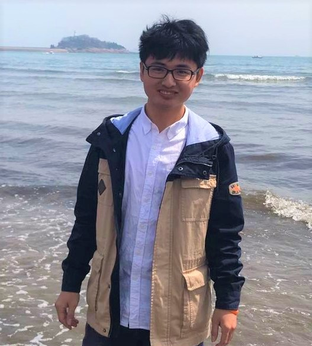

|  |
Zhengkai Jiang is a final year Master student at National Laboratory of Pattern Recognition, Institute of Automation, Chinese Academy of Sciences.
He received the B.Eng degree in Automation at 2017 from the Northeastern University with Honors.
|
|
Benjin Zhu, Zhengkai Jiang, Xiangxin Zhou, Zeming Li, Gang Yu Arxiv, 2019, (NuScenes Winner). Paper |
|
Zhengkai Jiang, Yu Liu, Ceyuan Yang, Jihao Liu, Qian Zhang, Shiming Xiang, and Chunhong Pan Arxiv, 2019. Paper |
|
Peng Gao, Zhengkai Jiang, Haoxuan You, Pan Lu, Steven CH Hoi, Xiaogang Wang, Hongsheng Li Conference on Computer Vision and Pattern Recognition (CVPR), 2019(Oral) Paper |
|
Zhengkai Jiang, Peng Gao, Chaoxu Guo, Qian Zhang, Shiming Xiang, and Chunhong Pan Proceedings of the AAAI Conference on Artificial Intelligence (AAAI), 2019. Paper |
- Winner at the NuScenes 3D Detection of CVPR WAD workshop, 2019
- 3rd at the Instance Segmentation of ECCV COCO Workshop, 2018
- National Scholarship, 2014, 2015, 2016.
- First Prize of Chinese Mathematics Competitions (CMC), 2014, 2015.
- First Class Scholarship of NEU, 2014, 2016
- Second Prize of China Undergraduate Mathematical Contest in Modeling (CUMCM), 2015.